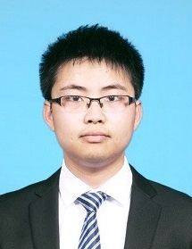

|
Jixiong Feng
|

|
Greetings! I received my master's degree at Department of Electronics Engineering(Dept.EE), Tsinghua University.
My supervisors was Ms. Liangrui Peng.
My research interest is mainly on machine learning and its applications to multimedia analysis and computer vision.
|
Education
- 2009-2013: Zhejiang University, Bachelor of Engineering
- 2013-2015: Tsinghua University, Master of Science
Work Experience
- 2015-NOW: Institute of Electronics, Chinese Academy of Science, Research Assistant
Selected Publications
Feng, Jixiong, L. Peng, and F. Lebourgeois.
"Gaussian process style transfer mapping for historical Chinese character recognition."
SPIE/IS&T Electronic Imaging International Society for Optics and Photonics, 2015.
Honors & Awards
- Best Student Award of the 22nd Document Recognition & Retrieval, SPIE2015 (San Francisco, USA)
- 3rd Award of Tsinghua Student Award (2015)
- National Award (2010, 2011 and 2012)
- 2nd award of the National Math Competition for the Undergraduates
Contact
Mail Adress: Institute of Electronics, Chinese Academy of Science,
No.19 North 4th Ring Road West, Haidian District, Beijing, China.
Email: jxfeng@mail.ie.ac.cn
|